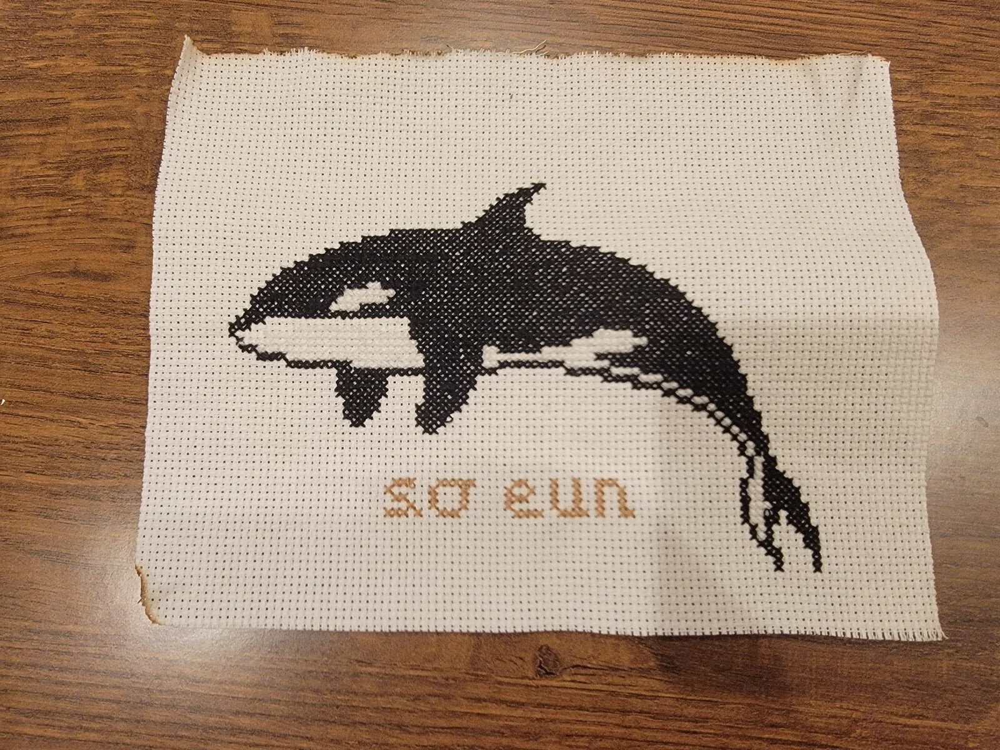
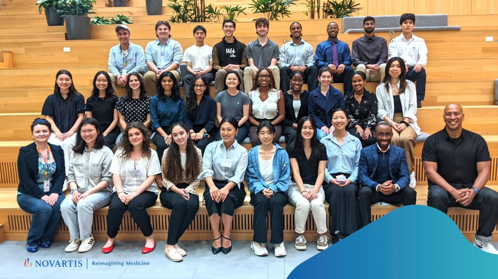

Blog

Cross-stitching!
A quiet hobby that helps me slow down, make meaningful gifts, and stay grounded.

ASCB Conference in San Diego
Presenting my work on the Cdc42 signaling pathway at my first cell-biology conference.

Summer internship at Novartis
Working with Nanovial technology and learning from a collaborative biomedical research community.